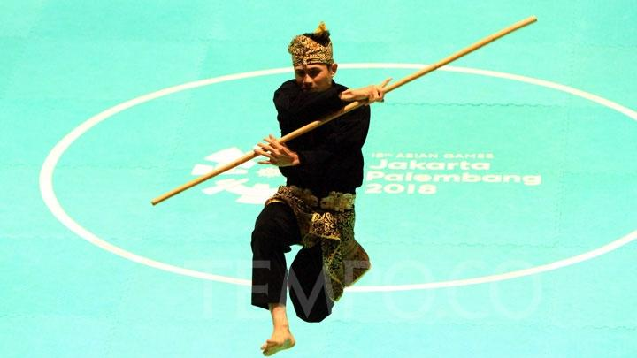

Passion for martial arts
In Artistic component of Silat, a series of movements which comprises of stances, hand movements as well as positioning plays a critical role in scoring of points. There are three categories; individual, duo and trio. For me, I have participated in the individual and duo category.
Weapons used for Artistic

A parang used for performance

A galah used as extension of the arm